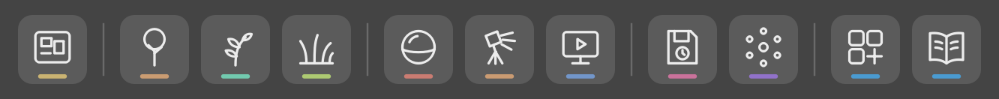

Instalación
MantiTools se instala arrastrando un archivo al visor de Maya. No hace falta copiar carpetas a mano ni tocar Maya.env.
Antes de empezar#
- Maya 2026 o 2027, en Windows o macOS.
- La carpeta de MantiTools descargada y descomprimida en un sitio fijo, por ejemplo
Documentos/maya/MantiTools.
No muevas ni renombres la carpeta después de instalar. Maya la busca siempre en el mismo sitio. Si tienes que moverla, vuelve a arrastrar instalar.py desde su sitio nuevo.
Instalar paso a paso#
- Abre Maya.
- Desde el explorador de archivos (Finder en Mac), arrastra
instalar.pyhasta el visor de Maya y suéltalo. - Si Maya pregunta por un plugin sin firmar («Untrusted Plugin Loading»), pulsa Allow. Más abajo se explica cómo evitar que vuelva a salir.
- Aparecen el menú MantiTools en la barra de Maya, el estante MantiTools y la ventana central.
- Si tenías herramientas instaladas por separado, un mensaje te dice cuáles se han apartado.


Qué hace el instalador#
| Paso | Detalle |
|---|---|
Escribe mantitools.mod | En tu carpeta de módulos de Maya. Un solo archivo da a Maya MantiTools y las nueve herramientas de la carpeta incluidas. |
| Aparta las herramientas sueltas | Si había un radial.mod, materials.mod, lightmanager.mod… lo mueve a la carpeta mantitools_apartadas, junto a modules, y quita su carga automática. No borra nada. |
| Instala el complemento de Painter | Copia el complemento de Substance 3D Painter de Materials a su carpeta de complementos (se cambia en Ajustes → Materials). |
| Carga MantiTools | Carga el plugin, lo marca para que se cargue siempre al abrir Maya y crea el estante. |
Los ajustes, bibliotecas, tableros y radiales de las herramientas que ya usabas se conservan: MantiTools usa las mismas preferencias que las versiones sueltas.
Dónde está la carpeta de módulos#
| Sistema | Carpeta |
|---|---|
| Windows | Documentos\maya\modules |
| macOS | ~/Library/Preferences/Autodesk/maya/modules |
Después de instalar, en esa carpeta solo debería quedar mantitools.mod. Las herramientas sueltas apartadas están en mantitools_apartadas, al lado.
El aviso de seguridad de Maya#
Maya avisa cada vez que carga un plugin sin firmar fuera de una ruta de confianza. Para no verlo en cada arranque:
- Windows → Settings/Preferences → Preferences.
- Categoría Security.
- Añade la carpeta
plug-insde MantiTools a las rutas de confianza (Trusted locations). - Guarda las preferencias.
Mientras ese diálogo espera respuesta, Arnold todavía no ha cargado y Maya puede escribir «Warning: Arnold renderer not loaded». No es un error: Arnold carga en cuanto aceptas. Con la ruta de confianza añadida no vuelve a salir ninguno de los dos.
Reinstalar, actualizar o desinstalar#
Arrastra otra vez instalar.py al visor. Como MantiTools ya está instalado, Maya pregunta qué quieres hacer:
| Opción | Qué hace |
|---|---|
| Reinstalar | Vuelve a escribir el .mod, el estante y el complemento de Painter. Úsalo después de actualizar la carpeta o si algo se ha estropeado. |
| Desinstalar | Quita el .mod, el estante y el complemento de Painter, y devuelve las herramientas sueltas que se apartaron al instalar. |
| Cancelar | No cambia nada. |
Actualizar a una versión nueva#
- Cierra Maya.
- Sustituye la carpeta de MantiTools por la nueva (en el mismo sitio). Si la tienes clonada con Git, basta con
git pull. - Abre Maya y arrastra
instalar.py→ Reinstalar. - Si el estante no cambia de orden o de iconos, usa MantiTools → Recrear estante.
Comprobar que todo está bien#
MantiTools → Comprobar instalación revisa cada herramienta y escribe un informe:
- si está cargada y desde dónde (del pack o de otra copia),
- su versión,
- si queda algún
.modsuelto activo que pueda chocar con el pack, - y la comprobación propia de las herramientas que la tienen (Árboles, Radial, GrassEditor).
Las líneas que empiezan por «!» son avisos. Copiar informe lo deja en el portapapeles para pegarlo en un correo. Más en Problemas y preguntas.
Ver también#
- Primeros pasos
- Problemas y preguntas
- Carpeta de clase: instalar en un aula con carpeta de clase.